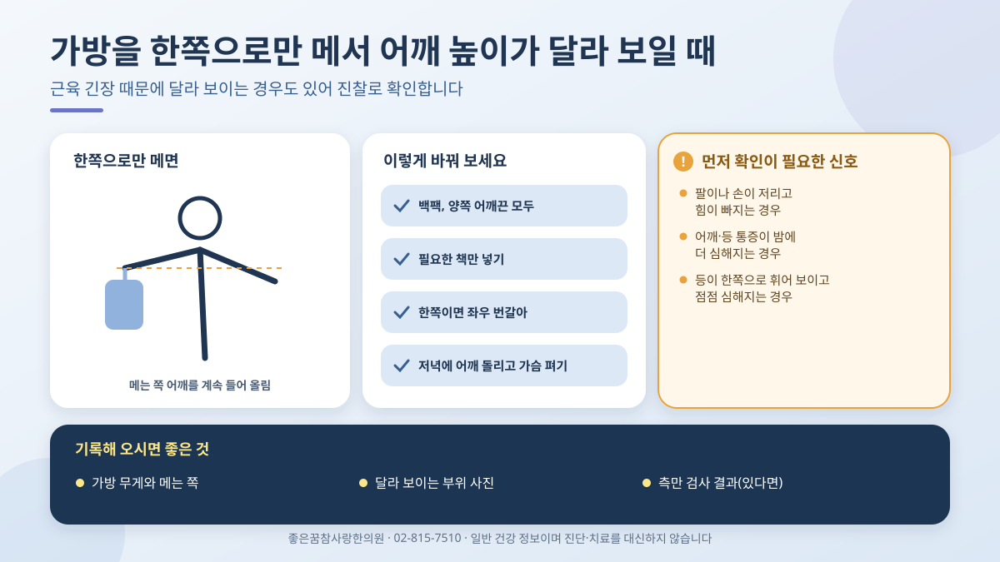

이종호 한의사 감수좋은꿈참사랑한의원 대표원장 (한의사 면허번호 19769)발행 2026-11-24 · 수정 2026-11-24
이 글의 차례
가방 무게를 줄이고 양쪽 어깨로 나눠 메는 것이 한쪽 어깨에 몰린 긴장을 푸는 가장 쉬운 시작입니다. 노량진을 오가는 수험생의 가방은 책과 노트북으로 늘 무거워, 거울을 보다 한쪽 어깨가 올라가 보인다며 걱정하는 분이 있습니다.
왜 이런 불편이 생길 수 있나요
- 같은 쪽으로 가방을 메면 가방이 흘러내리지 않도록 그쪽 어깨를 계속 들어 올리게 되어 근육이 긴장한 채로 굳기 쉽습니다.
- 무게를 버티느라 몸통이 반대쪽으로 기울면 목과 등, 허리까지 좌우 긴장이 달라질 수 있습니다.
- 공부할 때 한쪽으로 기대 앉거나 턱을 괴는 습관이 더해지면 차이가 더 커 보이기도 합니다.
- 뼈의 모양보다 근육 긴장 때문에 높이가 달라 보이는 경우도 있어 진찰로 확인하는 것이 좋습니다.
먼저 이렇게 여쭙니다
- 가방 무게가 대략 어느 정도인가요?
- 늘 같은 쪽 어깨로 메나요?
- 목이나 등 한쪽이 더 뻐근한가요?
- 사진이나 거울에서 어깨 높이가 달라 보이나요?

일상에서 먼저 해 볼 수 있는 것
- 백팩으로 바꾸고 양쪽 어깨끈을 모두 메기
- 필요한 책만 넣어 가방 무게 줄이기
- 한쪽으로 멜 때는 좌우를 번갈아 메기
- 저녁에 어깨를 천천히 돌리고 가슴 펴기
한의원에서 함께 살필 수 있는 경우
- 어깨 높이가 달라 보이는 경우 자세와 척추·골반의 균형을 함께 살핍니다.
- 한쪽 목과 등이 자주 뭉치는 경우 생활 습관과 근육의 긴장을 함께 살핍니다.
- 어깨 높이 차이와 함께 골반이나 허리선이 달라 보이는 경우 서 있는 모습을 함께 살핍니다.
좋은꿈참사랑한의원에서는 모든 분께 맥부터 짚으며 불편한 곳을 여쭙고, 서 있는 모습과 앉는 자세를 직접 보며 척추·골반의 균형을 살핍니다. 필요하다고 판단될 때 초음파로 아픈 부위를 확인하고, 추나와 침 가운데 지금 상태에 맞는 방법을 정한 뒤 귀가 전에는 집에서 할 수 있는 자세 조정을 알려 드립니다.

이렇게 기록해 오시면 상담이 쉬워집니다
- 가방 무게(대략)와 메는 쪽, 하루 메고 다니는 시간
- 거울이나 사진에서 달라 보이는 부위(어깨, 골반, 허리선)
- 한쪽 목·등이 뭉치는 때와 팔 저림 여부
- 예전에 척추 측만 관련 검사를 받은 적이 있다면 그 결과
이런 증상은 먼저 확인이 필요합니다
- 팔이나 손에 힘이 빠지거나 저림이 점점 심해지는 경우
- 어깨나 등 통증이 밤에 더 심해지는 경우
이런 신호가 있으면 한의원보다 가까운 병원이나 응급실을 먼저 찾으세요.

여쭙는 것
- 가방 무게가 대략 어느 정도인가요?
- 늘 같은 쪽 어깨로 메나요?
- 목이나 등 한쪽이 더 뻐근한가요?
생활에서 해 볼 것
- 백팩으로 바꾸고 양쪽 어깨끈을 모두 메기
- 필요한 책만 넣어 가방 무게 줄이기
- 한쪽으로 멜 때는 좌우를 번갈아 메기
한의원에서 함께 살필 것
- 어깨 높이가 달라 보이는 경우 자세와 척추·골반의 균형을 함께 살핍니다.
- 한쪽 목과 등이 자주 뭉치는 경우 생활 습관과 근육의 긴장을 함께 살핍니다.
- 어깨 높이 차이와 함께 골반이나 허리선이 달라 보이는 경우 서 있는 모습을 함께 살…
먼저 확인이 필요한 신호
- 팔이나 손에 힘이 빠지거나 저림이 점점 심해지는 경우
- 어깨나 등 통증이 밤에 더 심해지는 경우
한눈에 보는 표
| 구분 | 핵심 |
|---|---|
| 여쭙는 것 | 가방 무게가 대략 어느 정도인가요? 늘 같은 쪽 어깨로 메나요? |
| 생활에서 해 볼 것 | 백팩으로 바꾸고 양쪽 어깨끈을 모두 메기 필요한 책만 넣어 가방 무게 줄이기 |
| 한의원에서 함께 살필 것 | 어깨 높이가 달라 보이는 경우 자세와 척추·골반의 균형을 함께 살핍니다. 한쪽 목과 등이 자주 뭉치는 경우 생활 습관과 근육의 긴장을 함께 살핍니다. |
| 먼저 확인이 필요한 신호 | 팔이나 손에 힘이 빠지거나 저림이 점점 심해지는 경우 어깨나 등 통증이 밤에 더 심해지는 경우 |
자주 묻는 질문
어깨 높이가 다르면 꼭 교정이 필요한가요?
생활 습관만 바꿔도 편해지는 경우가 있어, 진찰 후 필요한 방법을 함께 정합니다.
백팩이 늘 더 좋은가요?
양쪽으로 무게를 나눌 수 있어 도움이 되지만, 너무 무거우면 백팩도 부담이 되니 무게를 줄이는 것이 먼저입니다.
사진으로 어깨 높이를 비교해 봐도 될까요?
정면에서 편하게 선 모습을 같은 장소에서 찍어 두면 변화를 비교하는 데 도움이 됩니다. 진료 때 보여 주시면 함께 확인합니다.
진료 시간은 어떻게 되나요?
좋은꿈참사랑한의원은 평일 09:30~20:00(점심 13:00~14:00), 토·일·공휴일 09:30~15:00에 진료합니다.
좋은꿈참사랑한의원은 재진 때 지난번 이야기부터 이어서 여쭙니다. 진료시간과 예약은 오시는 길에서 확인하세요.
어디서 상담받을 수 있나요?
좋은꿈참사랑한의원은 서울 동작구 만양로2길 2 신성빌딩 3층·5층(서울 동작구 상도동, 7호선 상도역 3번 출구 근처)에 있습니다. 한의사 3명(이종호 대표원장, 조영기 수석진료원장, 정원영 진료원장)이 진료합니다. 진료시간은 평일 09:30~20:00(점심 13:00~14:00), 토·일·공휴일 09:30~15:00이며, 방문 전 전화로 확인을 권합니다. 예약은 네이버 예약, 카카오톡 상담, 전화 02-815-7510로 받습니다.
이 글은 일반적인 건강 정보이며 개인의 진단이나 치료를 대신하지 않습니다. 증상이 있거나 복용 중인 약이 있다면 진료를 통해 확인하세요. 치료 효과는 개인마다 다를 수 있습니다.
작성 기준: 일반적으로 알려져 있는 건강 정보를 참고해 정리했습니다(대표원장 감수). 증상 기록은 1~2주 동안 하루 1회, 비슷한 시간에 적어 오시면 지난 상태와 비교하기 쉽습니다.